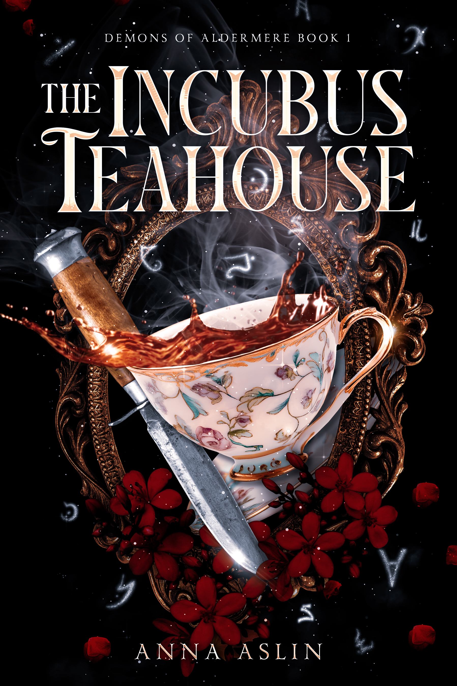

The Incubus Teahouse
In Aldermere, some demons serve tea and others want your head.
Demon hunter Edna Locke came to Aldermere for one reason: vengeance. The creature that slaughtered her family—the Beheader—has struck again in the gothic tourist attraction. Hunting a demon through the city’s fog-soaked streets means accepting help from unlikely allies: Damien Ashford, a charming teahouse owner, and Lucian Sinclair, his business partner—two incubi posing as humble tea merchants. They need the Beheader dead as badly as she does, and time is running out.
As the hunt grows more perilous, the line between trust and temptation begins to blur—and Edna finds herself drawn to the very creatures she was trained to destroy. But this isn’t just a hunt for vengeance. Fear is spreading through Aldermere, sermons are turning into riots, and if Edna fails, the city’s carefully kept secrets may shatter—releasing something far worse than the Beheader.
The Incubus Teahouse launches the Demons of Aldermere series, a gothic romantic fantasy about hidden monsters, broken loyalties, and unlikely tenderness. Perfect for fans of slow-burn danger, morally gray demons, and tea served with flirtation and a ginger cat.